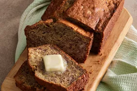

Banana Bread
Homepage

I don't know where we got this recipe. It's simple and good though!
Ingredients
- 2/3 ripe bananas
- 1 1/2 cups of flour
- 1 cup of sugar
- 1 egg
- dash of vanilla extract
- as many chocolate chips as you want
- 1/2 tsp baking soda
- pinch of salt
Directions
Preheat oven to 350 degrees. In a large bowl, mix all of the ingredients together. Bake for 50 mins to an hour.